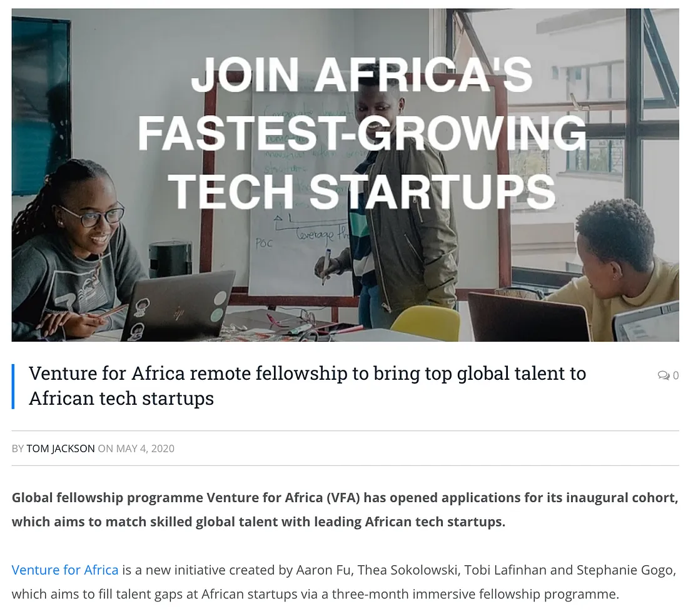
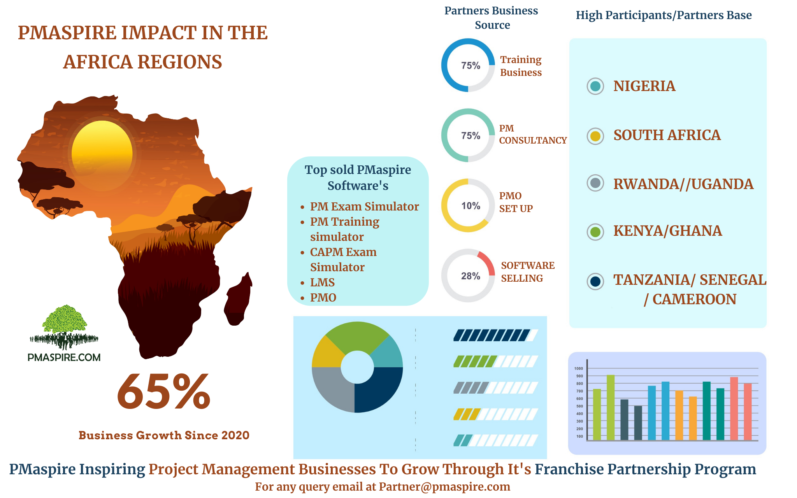

1. Workload

Both IT staff and decision-makers are overwhelmed with work demands. Decision-makers delay training due to heavy workloads, while staff struggle with tasks due to lack of training.
2. Cybersecurity
.webp)
55% of consumers would switch platforms due to a data breach threat; 78% would switch if a breach impacted them directly.
3. Digital Transformation

Digital transformation has disrupted industries, removing sustained competitive advantages from technology alone.
4. Cloud Computing
.jpg)
Cloud is the top investment area worldwide, requiring skilled professionals to manage cloud platforms effectively.
5. Hiring
There is a shortage of skilled IT professionals, making it difficult for African organizations to fill technical roles effectively.
6. Career Growth

Two-thirds of IT professionals switch employers to gain better development opportunities—often prioritizing this over salary.
7. Automation
Automation can reduce workload by handling repetitive tasks like email campaigns and social media scheduling.
8. Project Management
Organizations with certified project managers are more likely to finish projects on time and within budget.
9. Analytics and Data Management
Managing and analyzing data effectively remains a key challenge, as data grows rapidly but analytical capabilities lag.
10. Skills Gaps
Many organizations struggle with digital transformation due to legacy systems and lack of skilled personnel.